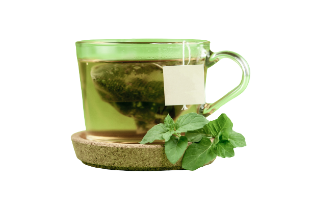

Feel the Taste
We C reate Your Relax
.png)
"Green Diamond" Нунтаг
Бор цай 50г
Жич : "Ямэ цай"-г Япон улсын Фүкүока мужийн
Ямэ аймагт тарьж, боловсруулдаг бөгөөд хамгийн
дээд ангиллын цайнд зүй ёсоор ордог.
Японд тариалж байгаа дээд ангиллын
цайны 50%-иас дээш хувийг "Ямэ цай" эзэлдэг
ба цай тариалах арга, үйлдвэрлэх технологиороо
Япон улсдаа хамгийн шилдэг нь учир
"Green Diamond" хэмээн нэрлэгддэг.
Contact
Address: 500 Terry Francois
Street San Francisco, CA 94158
Phone: 123-456-7890
Email: info@mysite.com
Shop
Shop All
Christmas Decorations
Arts & Crafts
Clothes & Accessories
Kids
Policy
Shipping & Returns
Store Policy
Payment Methods
FAQ
Social
Facebook
Instagram
Twitter
Pinterest

"Green Diamond" Нунтаг
Ургамалын ногоон цай 50г
Жич : "Ямэ цай"-г Япон улсын Фүкүока мужийн
Ямэ аймагт тарьж, боловсруулдаг бөгөөд хамгийн
дээд ангиллын цайнд зүй ёсоор ордог.
Японд тариалж байгаа дээд ангиллын
цайны 50%-иас дээш хувийг "Ямэ цай" эзэлдэг
ба цай тариалах арга, үйлдвэрлэх технологиороо
Япон улсдаа хамгийн шилдэг нь учир
"Green Diamond" хэмээн нэрлэгддэг.
Худалдан авалт
90%
Хүлээлттэй байгаа бүтээгдэхүүн
44%
Үнэлгээ
95%
"Green Diamond" Нунтаг
Ургамалын цайы 50г
Жич : "Ямэ цай"-г Япон улсын Фүкүока мужийн
Ямэ аймагт тарьж, боловсруулдаг бөгөөд хамгийн
дээд ангиллын цайнд зүй ёсоор ордог.
Японд тариалж байгаа дээд ангиллын
цайны 50%-иас дээш хувийг "Ямэ цай" эзэлдэг
ба цай тариалах арга, үйлдвэрлэх технологиороо
Япон улсдаа хамгийн шилдэг нь учир
"Green Diamond" хэмээн нэрлэгддэг. ДЭЭД ЗЭРЭГЛЭЛИЙН ЯПОН НОГООН ЦАЙ🍵🇯🇵🎉
🌿Танай ногоон цай их шээлгэж хаванг сайн хөөдөг юм байна.
Тийм ээ, ДЭЭД ЗЭРЭГЛЭЛИЙН ЦАЙНЫ НАВЧААР хийсэн учраас маш нарийн ширхэгтэй, гүн ногоон өнгөтэй🍵🇯🇵 Тэр хирээрээ үр дүн өндөр💯
🌿Цайны шаар нь хатуу юм байхгүй дан зөөлхөн навч л үлдэж байна лээ.
Иш гол зэрэг хатуу хэсгийг хийхгүйгээр 💯 хувийн цэвэр навчаар хийсэн тул хандалсны дараа гүцэнд дан зөөлөн навч л үлдэнэ‼️